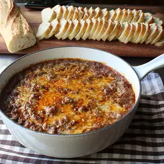

Chef John's Hot Sloppy Joe Dip

Description
For me this checks all the boxes for a hot party dip. It's relatively cheap and easy to make, but maybe more importantly, it's great hot, warm, or room temp. And it's also incredibly versatile.
Ingredients
- 2 pounds extra lean ground beef
- 2 green bell peppers, diced
- 1 onion, diced
- 4 cloves garlic, minced
- 3 tablespoons all-purpose flour
- 2 tablespoons brown sugar
- 2 teaspoons kosher salt, or to taste
- 1 teaspoon ground black pepper
- cayenne pepper, to taste
- 2 cups chicken broth
- 1 cup ketchup
- 1 tablespoon Dijon mustard
- 1 teaspoon Worcestershire sauce
- 1 cup shredded Cheddar cheese, divided
Steps
- Place ground beef, bell pepper, onion, garlic, flour, brown sugar, salt, pepper, and cayenne pepper in a heavy pot.
- Place pot over medium-high heat. Break up and stir mixture as it heats. Cook and stir until most of the moisture has evaporated and mixture is crumbly and begins to brown, about 15 minutes. Stir in chicken broth, ketchup, mustard, and Worcestershire sauce. Mix well and bring mixture to a simmer. Reduce heat to medium. Cook, stirring occasionally, until mixture is thick, about 45 minutes.
- Set oven rack about 6 inches from the heat source and preheat the oven's broiler.
- Transfer mixture to oven-proof sauce pan. Top with 1/2 of the shredded cheese. Poke cheese down into the dip with a fork, stirring lightly. Top with remaining cheese.
- Place pan under broiler; broil until cheese is browned, and mixture is hot and bubbly, about 5 minutes.